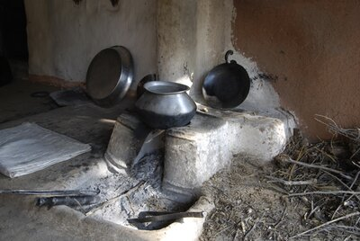
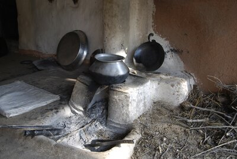

Method
The architecture of the model comprises four main components. First is the frozen CroCo encoder.
Last is the decoder D which is separately pre-trained and then frozen to
decode from CroCo latent space to RGB. Then there are the delighting and relighting transformers,
I and R respectively, which disentangle lighting
and intrinsics before recombining them. The training process here shows pairs of images encoded and
relit to match the lighting of the other image.

Task-Specific Training
For shadow removal and albedo estimation, we train components S and A to learn the transformations in the lighting latent space from the input latent to the desired output latent, which is derived from the ground truth output image.
 
